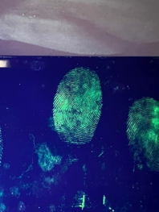
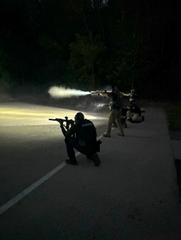
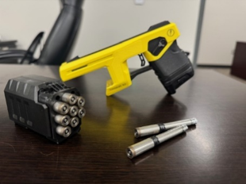

01 / Prepare
Training & Readiness
Helping expand access to specialized training and professional development that strengthen skills, sound decision-making and preparedness for the demands of public service.
Skills • Confidence • Preparedness
Supporting the advanced training, reliable equipment and specialized capabilities that help Jeffersontown Police Department personnel serve safely, effectively and with confidence.
The Foundation envisions a future where public safety is driven by innovation, built on trust and strengthened through community collaboration, positioning Jeffersontown as a model of proactive, community-focused policing.
Investing in advanced training and state-of-the-art equipment to keep officers well prepared, skilled and ready to meet evolving community needs.
Helping expand access to specialized training and professional development that strengthen skills, sound decision-making and preparedness for the demands of public service.
Supporting improvements to the tools and technology personnel rely on every day, helping them work efficiently, respond safely and provide effective service to the community.
Helping strengthen fleet capabilities and equip specialized units with resources that support their responsibilities, improve readiness and meet the department’s evolving operational needs.
Preparation takes many forms. Lifesaving skills, investigative work, driver training, team response and specialized operations all require repetition, strong instruction and the right resources.
The Foundation helps create opportunities to strengthen those capabilities so personnel can meet the moment when the community needs them.
View More Training → Driver Training
Driver Training Investigative Skills
Investigative Skills Team Response
Team ResponseFrom lifesaving response to specialized field operations, strong preparation supports safer, more capable service.
 Lifesaving Skills
Lifesaving Skills Low-Light Readiness
Low-Light Readiness
Evidence Processing
Team Training Specialized Mobility
Specialized Mobility
Equipment ReadinessModern public safety demands more than replacing worn equipment. The Foundation can help support thoughtful upgrades that improve capability, efficiency and readiness while giving specialized units access to tools that better fit the work they are asked to do.
These investments are designed to complement public funding and help move high-value opportunities forward when they can make a meaningful difference.
Your support can help strengthen training, improve equipment and expand the capabilities personnel rely on to serve the community safely and effectively.
Support Training & Equipment →